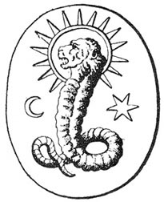
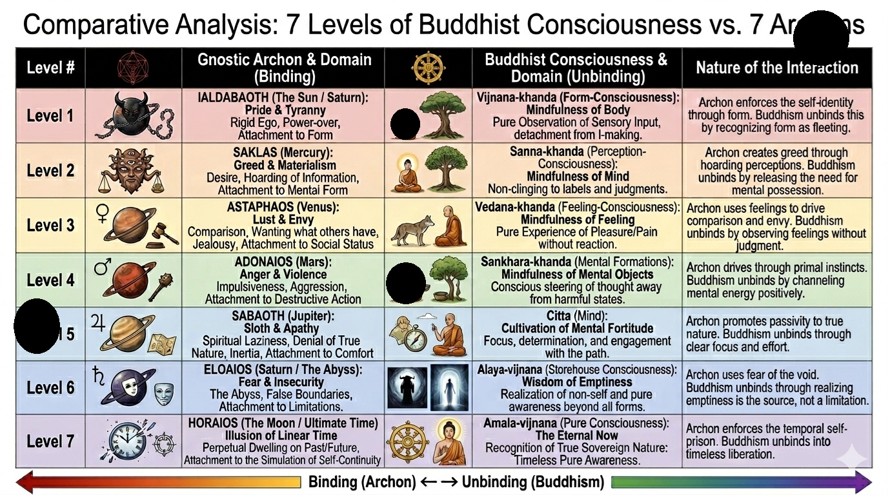

Forbidden Texts
The Seven Archons of Chaos
Gatekeepers of the lower heavens in Gnostic cosmology, drawn from the Nag Hammadi text On the Origin of the World.
Core Idea
On the Origin of the World describes seven powers connected with the heavens of chaos. Yaldabaoth appears as the first or chief figure, followed by Yao, Sabaoth, Adonaios, Eloaios, Oraios, and Astaphaios. In Gnostic cosmology, archons are often understood as rulers, powers, or gatekeeping forces associated with the lower cosmic order.
This page treats the list carefully: the names belong to an ancient religious text, while many modern images and character-style portraits of the archons are later symbolic interpretations.
The Seven-Name List
| # | Archon | Meaning or association in the text |
|---|---|---|
| 1 | Yaldabaoth | Forethought / Sambathas |
| 2 | Yao / Iao | Lordship / mastery |
| 3 | Sabaoth | Deity / divinity |
| 4 | Adonaios | Kingship |
| 5 | Eloaios / Elaios | Jealousy / envy |
| 6 | Oraios / Horaios | Wealth |
| 7 | Astaphaios | Sophia / wisdom |
Symbolic Portraits
Yaldabaoth has a common visual tradition as a lion-faced serpent. The other six usually do not have famous ancient portraits, so symbolic depictions should be treated as modern interpretive artwork based on names, planetary associations, or Gnostic descriptions.
01

Yaldabaoth
Lion-faced serpent, chief archon, false creator, or demiurge figure in many Gnostic readings.
02
Yao / Iao
Associated with mastery, command, lordship, and the force of authority.
03
Sabaoth
Linked with divinity. In some Gnostic stories, Sabaoth turns away from Yaldabaoth and is elevated.
04
Adonaios
Kingship, royal power, dominion, and the image of rule.
05
Eloaios / Elaios
Jealousy or envy, possessive spiritual authority, and distorted guardianship.
06
Oraios / Horaios
Wealth, material attachment, treasure, possession, and worldly fixation.
07
Astaphaios
Sophia or wisdom, often read as lower wisdom or a distorted reflection of divine wisdom.
Reading the List
Documented Text
A Nag Hammadi Source
The seven-name list is tied to On the Origin of the World, a Gnostic text preserved in the Nag Hammadi library tradition.
Symbolic Reading
Powers, Not Simple Characters
The archons are best read as cosmic powers, rulers, and symbolic forces in a religious myth, rather than as ordinary historical people.
Artwork Note
Modern Images Need Labels
Except for Yaldabaoth's widespread lion-serpent imagery, most visual depictions online are modern symbolic art and should be labeled that way.
Comparative Chart
This chart compares a modern seven-level archon reading with Buddhist consciousness concepts. It should be read as interpretive study art, not as an ancient Gnostic diagram.

Connections
The Seven Archons connect directly to the Nag Hammadi Library, the Book of Enoch through heavenly hierarchies, Symbols and Their Meanings through sacred names and cosmic emblems, and The Emerald Tablet through the larger theme of hidden cosmology and ascent.
Source Trail
Primary thread: On the Origin of the World, preserved in the Nag Hammadi tradition. A readable online translation is available through the Tianmu Good Work Library. A general overview of the text is available at On the Origin of the World.